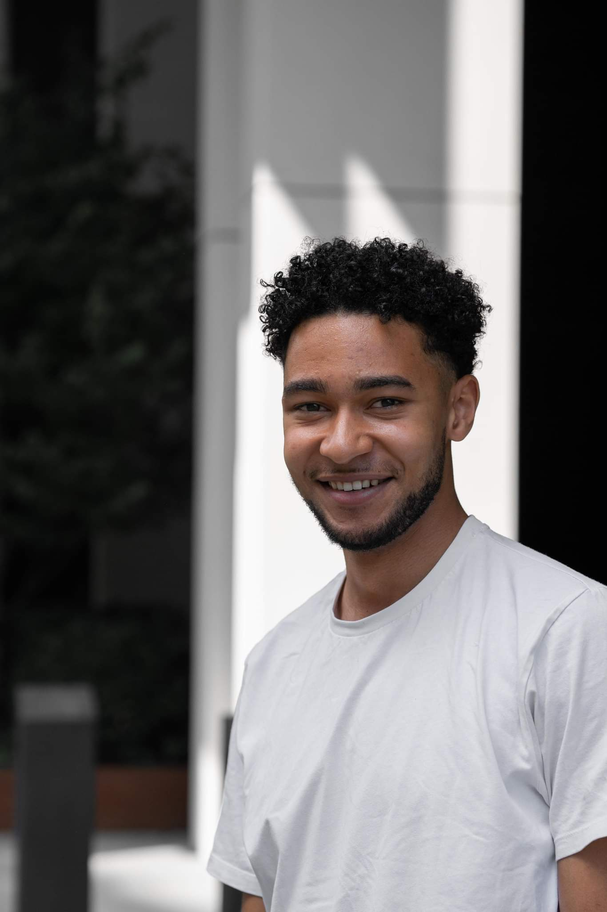
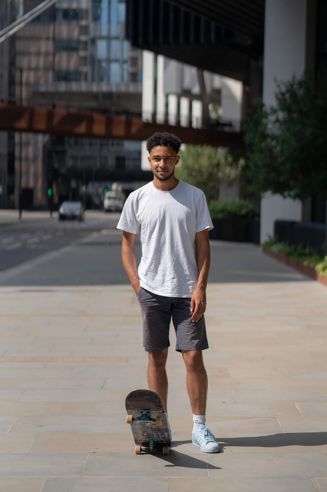
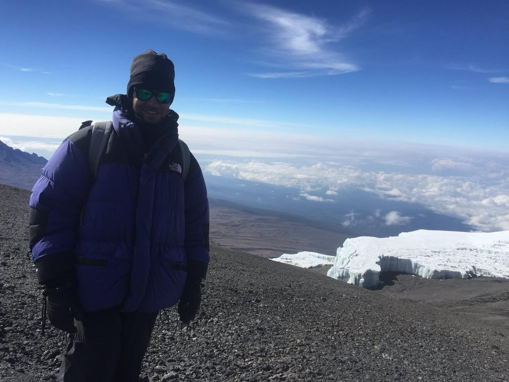
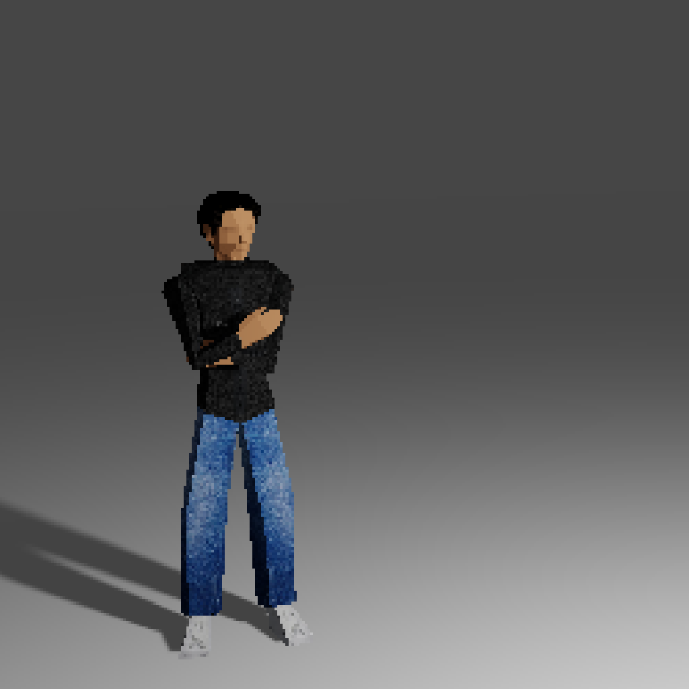

<!DOCTYPE html>
<html lang="en">
<head>
    <meta charset="utf-8">
    <meta name="viewport" content="width=device-width, initial-scale=1">
    <title>About Me</title>
    <link rel="stylesheet" href="styles.css">
    <link rel="icon" href="favicon.ico">
    <script src="scripts.js" defer></script>
    <meta name="description" content="Acid Drop is a site dedicated to my hobby of skateboarding">
</head>
</html>


<body>

<header>
<nav class="navigation">
  <li class="navlink"><a href="index.html">Home</a></li>
  <li class="navlink"><a href="why-founders-coders.html">Why am I applying to Founders and Coders?</a></li>
  <li class="navlink"><a href="https://github.com/malcolmwilson8">Visit My Github Repository</a></li>
  <div class="navmenubutton" id="responsivemenu"></div>
</nav>
</header>

<section class="text">

<h1>Who Am I?</h1>

<div class="abtmeimages">
</img>
</div>

<p>
Nice to meet you! My name is Malcolm Wilson, I'm 27 years old and originally from Essex. I studied French, Spanish & Business at the University of Nottingham
between 2013 to 2017 (graduating with a 2:1), before I moved permanently to London. I started my first job in 2017, working as a
Graduate Account Executive for Auto Trader UK, and have progressed over the last 5 years to become an Account Manager at the company.
</p>

<div class="abtmeimages">
</img>
</div>

<p>
Outside of work, I love to keep active, and skateboarding is one of the major ways I do this. I have skated since the age of 10, and I enjoy
regularly meeting up with friends to skate, or heading out into the city on solo skate sessions. Other than skateboarding, I often go to the 
gym in my spare time, and enjoy playing tennis at my local tennis club in Harrow.
</p>

<div class="abtmeimages">
</img>
</div>

<p>
I am passionate about charitable causes, and in August 2017 I completed a charity climb of Mount Kilimanjaro for AIDS Orphan UK, raising £2150
in the process. This was a challenge which required great determination and persistence, both physically and in terms of organising fundraising
events, however it was one which I relished and devoted myself fully to.
</p>

<div class="abtmeimages">
</img>
</div>

<p>
My other main passions in life intersect directly with each other; technology, video games and 3d art. Each has been a big part of my life since 
I was a child. I remember my first experiences playing games like Final Fantasy 7 on our Playstation 1 and being captivated by the fact that an 
entire world could effectively live and breathe through the medium of a simple CD ROM. That fascination continues to this day. It has driven me to 
embrace my creative side, and immerse myself in the worlds of 3d art through Blender, with the aim of one day using my skills to create a video game, 
and coding, which I have been self-learning since early 2022.
</p>

<p>
I'm an individual who believes strongly in personal development, and building new skills for growth. With coding, I have discovered a skill  
that inspires me to learn more within a field filled with endless creative possibilities. Ultimately, something that I am excited to explore my full potential in.
</p>

</section>

<!-- <header>
    <nav>
      <div class="nav-links">
        <ul>
          <li><a href="index.html">Home</a></li>
          <li><a href="about.html">About</a></li>
          <li><a href="https://www.youtube.com/watch?v=hl5WGykWWUc">Click to watch a cool skate video</a></li>
        </ul>
      </div>
    </nav>
  </header> -->

<footer>
    <time class="datentime">
        <div class="datetime">
          <div class="time">7:34 PM </div>
          <div class="date">Thursday, November 10 2022</div>
    </time>
    © 2022 Malcolm
</footer>

</body>